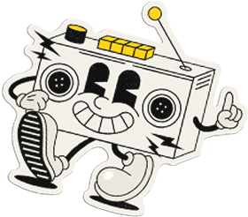
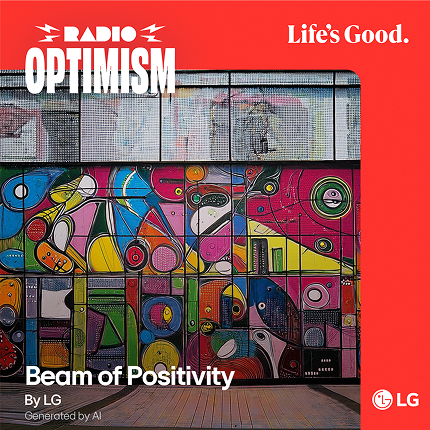
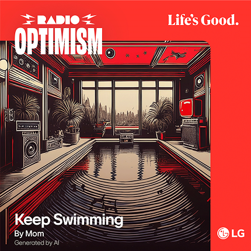
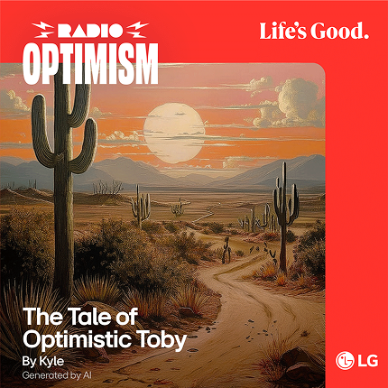
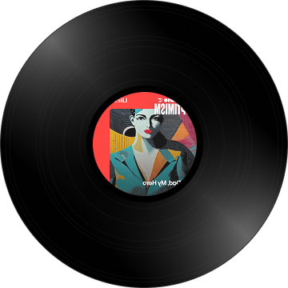
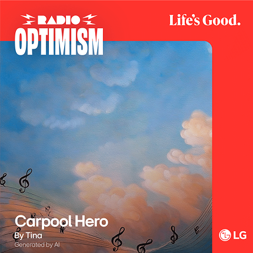
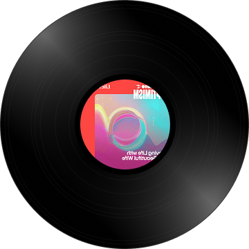
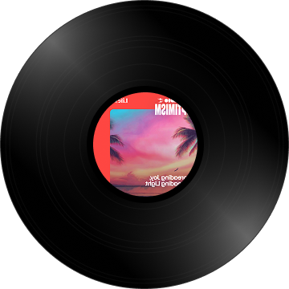

Erstelle einen Song und versüße jemandem den Tag


Nach unten scrollen
Wir scrollen, wischen und vergeben jeden Tag
Likes.
Aber verbinden wir uns wirklich miteinander?
Vielleicht brauchen wir mehr echte Herzensverbindungen.


Deshalb bringen wir unsere Botschaft „Life’s Good“
durch die einzigartige Sprache der Musik zu euch.
Kreiere einen Song für jemanden, der dir wichtig ist – mit LG Radio Optimism.
Ganz einfach: Denk an diese besondere Person und beschreibe sie mit ein paar Worten.
Daraufhin entsteht ein ganz individueller Song, den du mit einem Lächeln teilen kannst.


In dem Moment, in dem du einen Song von Herzen für jemanden machst, oder selbst einen solchen empfängst - entsteht echte Verbundenheit. Genau dann spüren wir, was Life’s Good wirklich bedeutet.
So erstellst du deinen Song
Nur ein paar Klicks – es ist ganz einfach.
 Willkommen bei Radio Optimism.
Willkommen bei Radio Optimism.
Tippe auf „Song erstellen“, um mitzumachen.
Wähle einfach deine bevorzugte Sprache und lege direkt los.
 Erzähl deine Geschichte.
Erzähl deine Geschichte.
Wer bist du und für wen ist dieser Song?
Je mehr du teilst – eine Erinnerung, einen Moment oder etwas, das nur ihr beide kennt – desto besser
werden deine Lyrics. Wenn du fertig bist, verwandeln wir alles in einen Song mit individuellem Cover.
Songs, die nur für dich gemacht sind
















Erfahre mehr über Life's Good